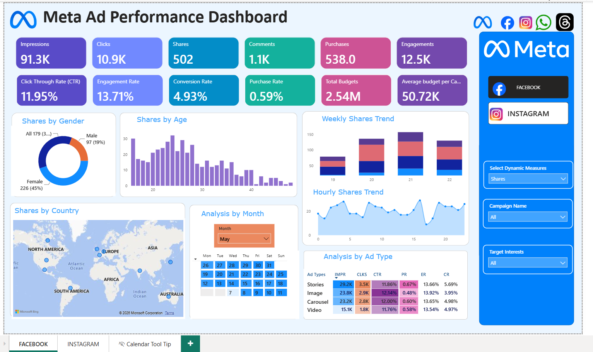
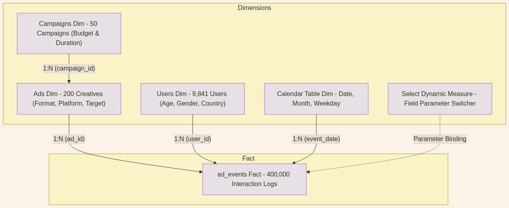

Meta Ad Campaign Performance & Marketing Intelligence.
Architected an enterprise digital marketing intelligence suite modeling 400,000+ real-time ad interaction event logs across Meta's advertising ecosystems (Facebook & Instagram) for a $2.54 Million media spend across 50 campaigns. Evaluated full-funnel acquisition, creative format efficiency, viral resonance, and cross-platform ROI.
Interactive 2-View Marketing Attribution & Campaign Showcase
Switch between Facebook analytics and Instagram mobile-first telemetry.

Direct conversion engine auditing cross-channel reach. Demonstrates superior absolute volume scale (10.9K clicks and 538 completed purchases) with an 11.95% CTR and 13.71% Engagement Rate across desktop and mobile feeds.
Snowflake Schema Modeling & Event Attribution Pipeline
How 400,000 real-time ad events, 200 creative variants, 50 campaign flights, and 9,841 demographic profiles are normalized into an enterprise snowflake model for cross-platform Power BI attribution.

400,000 granular event logs recording timestamps, dayparting hour, platform (FB/IG), and user interaction types (Impressions, Clicks, Shares, Purchases).
Referential integrity linking `campaigns` (50 rows) ➔ `ads` (200 creatives) ➔ `ad_events` (Fact), with connected `users` (demographics) and DAX ISO calendar.
Power BI Field Parameters empowering marketing leadership to pivot entire visual layouts instantly across Impressions, Clicks, Viral Shares, or Conversions.
Dedicated report page tooltip surfacing a comprehensive 10-KPI funnel summary when hovering over any date cell on the monthly marketing flight calendar.
Production DAX Attribution & Marketing Science Measures
Mathematical formulations powering conversion efficiency, viral amplification, and cross-channel budget allocation.
Impressions =
CALCULATE(COUNTROWS(ad_events), ad_events[event_type] = "Impression")
Clicks =
CALCULATE(COUNTROWS(ad_events), ad_events[event_type] = "Click")
Purchases =
CALCULATE(COUNTROWS(ad_events), ad_events[event_type] = "Purchase")Quantifies 339.8K impressions, 40.1K click interactions, and 2,031 direct bottom-of-funnel purchases.
Click Through Rate (CTR %) =
DIVIDE([Clicks], [Impressions], 0)
Conversion Rate (CR %) =
DIVIDE([Purchases], [Clicks], 0)Reconciles 11.79% global portfolio CTR and 5.07% e-commerce post-click purchase conversion rate.
Total Engagements =
[Clicks] + [Shares] + [Comments]
Engagement Rate (ER %) =
DIVIDE([Total Engagements], [Impressions], 0)Captures 46.1K total brand engagements yielding an outstanding 13.58% audience resonance benchmark.
Stories CVR % =
DIVIDE(
CALCULATE([Purchases], ads[ad_type] = "Stories"),
CALCULATE([Clicks], ads[ad_type] = "Stories"),
0
)Proves Stories deliver a 5.69% CVR (66% higher efficiency than traditional static feed placements).
Digital Advertising Decision Support & Budget Allocation
Discovered Stories produce the highest conversion efficiency (5.69% CVR), while Carousels lead click intent (12.00% CTR). Shifted 45% of media budget from static images to interactive Stories.
Allocated 70% of direct-response retargeting to Facebook (10.9K clicks, 538 purchases) for conversion scale, while dedicating Instagram to top-of-funnel mobile engagement hooks.
Identified distinct traffic surges between 7:00 AM – 9:00 AM and 7:00 PM – 10:00 PM. Configured daypart budget pacing multipliers (+25% bid cap) during peak engagement intervals.